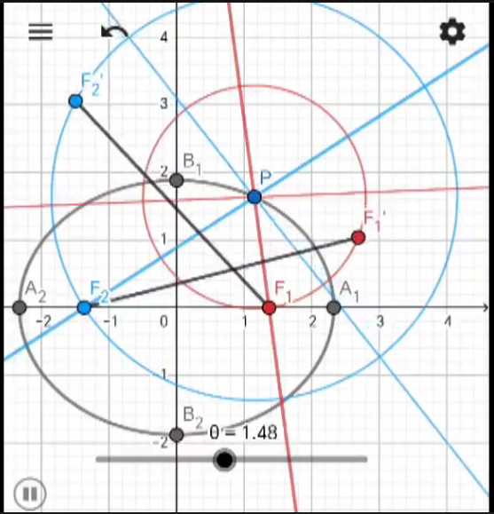

椭圆的光学性质 从椭圆的一个焦点出发的光线, 经过椭圆边界的一次反射后必经过另一焦点.
[群友@我是从物理群来的内鬼] 从椭圆内部任意一点出发的光线, 经过椭圆边界的多次连续反射后, 形成的直线族与一条圆锥曲线相切. 新的这条圆锥曲线 `c` 与原椭圆共焦点. 特别当光线从原椭圆短轴一端出发, 射向两焦点中间区域时, `c` 是双曲线; 否则 `c` 是椭圆.
 如图, 记椭圆的两个焦点为 `F_1, F_2`, 设光线在椭圆上一点 `P` 处被反射. 分别作出焦点关于入射光线 (蓝色细线) 和反射光线 (红色细线) 的对称点 `F_1', F_2'`. 由三角形 `PF_1 F_2' S= P F_1' F_2` 知道 `F_1 F_2' = F_1' F_2`. 设 `F_1'F_2` 与入射光线的交点为 `M`, `F_1 F_2'` 与反射光线的交点为 `N`, 由对称点的作法有 `F_1' F_2 = F_1 M + F_2 M`, `quad F_1 F_2' = F_1 N + F_2 N`. `M, N` 到 `F_1, F_2` 的距离之和相等, 因此它们落在以 `F_1, F_2` 为焦点的某个椭圆 `c` 上 (图中未画出). 又直线 `F_1 M` 和 `F_2 M` 关于入射光线对称, 推出入射光线恰好是 `c` 在 `M` 处的切线; 同理反射光线是 `c` 在 `N` 处的切线. 最终所有光线都与 `c` 相切, 证毕.